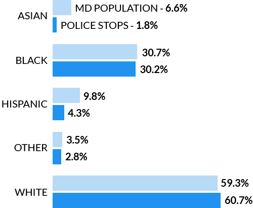

Maryland police stop data
Researchers at Stanford University gathered data on more than 60 million police stops in the United States, revealing disparities in the way officers treat minority motorists.
Does a similar bias exist in Maryland, where the population is one of the most racially and socioeconomically diverse in the nation?
Who gets stopped?
The racial breakdown of who police pulled over in Maryland roughly reflects the state population.
Maryland population compared to stopped motorists
However, year-over-year data appears to show an increase in the percentage of stops with black motorists.
Percent of stopped motorists who were black
Why do people get stopped?
Initial violations leading to the police stops shows that black and Hispanic motorists are about twice as likely than other ethnicities to be pulled over for equipment violations.
However, only three percent of the violations were equipment-related. Overall, there were no huge disparities between black, Hispanic and white motorists.
Asian motorists had the highest rate of speeding and safe movement violations.
Violations
Who gets searched and why?
The data shows black and Hispanic motorists are the most likely to have their vehicle searched. Black motorists are searched at nearly twice the rate of white and Asian motorists.
Percent of stops resulting in a search

According to the data, 45 percent of searches conducted on Hispanic motorists were incident to the arrest. In other words, these are counting searches occurring after an arrest. Black motorists have the lowest rate of incident to arrest searches at 22%.
This statistic is flipped for searches conducted for probable cause. Black motorists were searched far more often for probable cause while Hispanic motorists have the lowest rate for probable cause.
Searches for probable cause
Who's found with contraband?
Although black and Hispanic motorists are searched most often, white and Asian drivers were more likely to have contraband when searched.
Contraband chart
This figure is at odds with national statistics analyzed by Stanford researchers. In the U.S., officers find contraband at similar rates between black and white drivers
The gap grows larger when filtering for searches officers conducted for probable cause.
Contraband probable cause
The figures for Asian and Hispanic motorists are prone to error due to the sample sizes, but the difference is clear for black and white motorists in Maryland.
Stanford researchers warn that this is not a guaranteed sign of discriminatory behavior, as many unseen factors may skew the data.
What was the outcome?
Hispanic and black motorists were most likely to have their stop result in an arrest.
White motorists were least likely to receive a citation and most likely to leave with a warning.
Stop outcomes for:
0.6
percent arrested
39.9
percent citation
10.5
percent repair order
49.0
percent warning
Sample size: 944,728
Caveats
Etiam id nisl nisl.
Pellentesque scelerisque faucibus placerat. Pellentesque habitant morbi tristique senectus et netus et malesuada fames ac turpis egestas.
Sed posuere, nibh posuere suscipit sodales, elit odio dapibus eros, eget luctus nisi velit non orci.
Quisque ac luctus nunc, id lacinia orci. Donec suscipit lorem ac justo pulvinar, ut mattis massa viverra.
Nam ornare sodales tellus quis condimentum.
Etiam laoreet tempus libero, et pharetra mi consequat id.
Vivamus eget dui hendrerit, vehicula nibh in, dictum est.